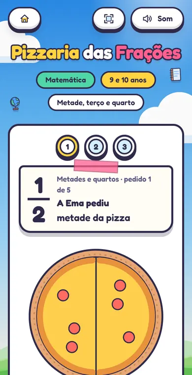
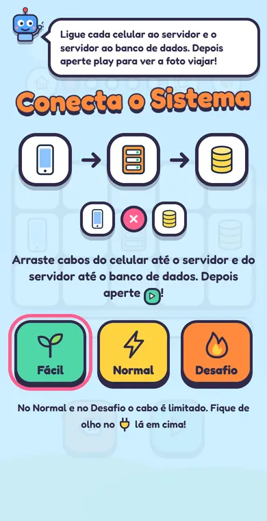
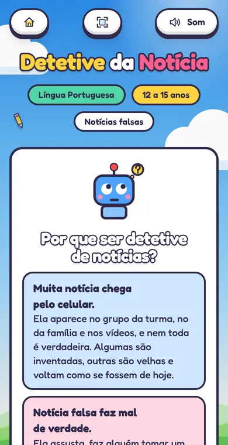
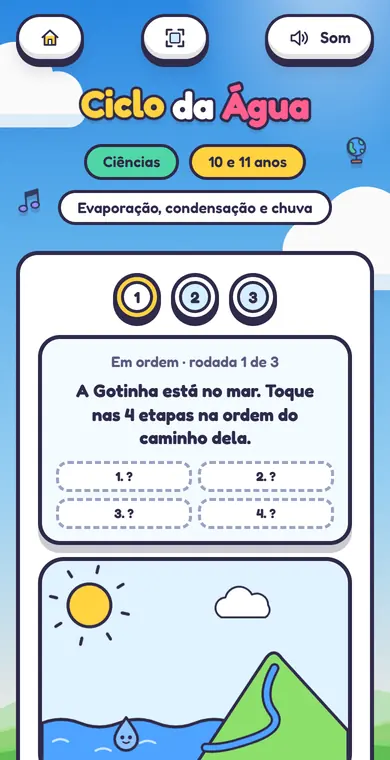
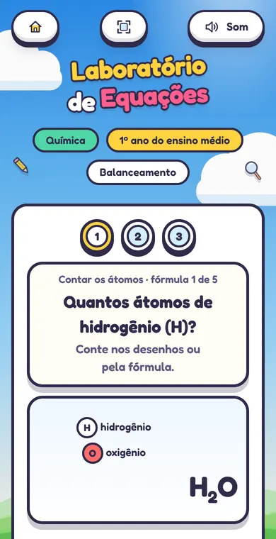
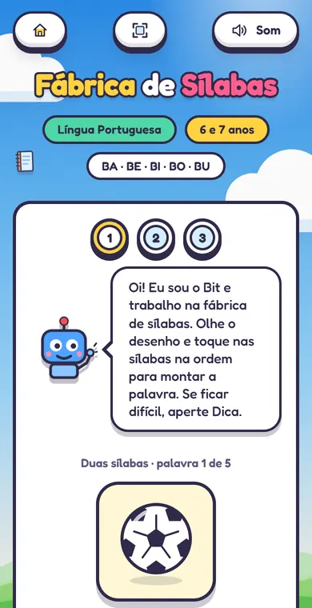

GamificaPampa
Jogos e ferramentas de IA para professores de escolas públicas de Alegrete. Eu faço o que chega na sala de aula: 19 jogos, uma aula de 50 minutos, a Oficina de Prompts e a Máquina de prompts.

- Para quem
- Professores da Educação Básica e as turmas deles, de 6 a 17 anos
- Meu papel
- Jogos, aula, Oficina, Máquina de prompts e boa parte do hub
- Com quem
- Projetos Educador 5.0 e GamificaEdu, UNIPAMPA, Campus Alegrete
- Feito com
- HTML, CSS e JavaScript, no GitHub Pages
A ideia
O GamificaPampa reúne projetos de extensão da UNIPAMPA, Campus Alegrete, que levam inteligência artificial e gamificação a professores de escolas públicas de Alegrete/RS: o Educador 5.0, sobre IA, e o GamificaEdu, sobre gamificação. O site trata a formação como um jogo, em três níveis: Descobrir, Criar e Aplicar.
A minha parte é o que chega na mão do professor e das crianças. Comecei com jogos que apresentam a programação e o curso de Engenharia de Software; depois vieram jogos para as outras matérias, feitos como exemplo do que um professor consegue criar com a Oficina.
O que eu fiz
Seis jogos de programação
Ninja dos Bugs, Programação em Dupla, Conecta o Sistema, Arcade do Código, Caça aos Bugs e Missão Dev. As crianças caçam bugs, programam em dupla (um pilota, o outro navega) e ligam o celular ao servidor e ao banco de dados.
Treze jogos por matéria
Do 1º ano ao ensino médio: Fábrica de Sílabas, Caminho da Escola, Ateliê das Cores, Circuito do Bit, Pizzaria das Frações, Ciclo da Água, Linha do Tempo, Inglês com o Bit, Balança do Bit, Detetive da Notícia, Reta do Bit, Laboratório de Equações e Genética do Bit.

Matemática, 9 e 10 anos

Programação, a partir de 8 anos

Português, 12 a 15 anos

Ciências, 10 e 11 anos

Química, 1º ano do ensino médio

Português, 6 e 7 anos
Para os professores
- Aula com os jogos: 50 minutos sobre como se faz um programa, para turmas de 6 a 14 anos, com roteiro, slides, folha de atividades e certificado.
- Oficina de Prompts: quatro encontros para pedir ao Gemini planos de aula, atividades, avaliações e jogos, com o Jogo do Prompt, o construtor de prompts e um curso online para quem não pode ir aos encontros.
- Máquina de prompts: o professor escolhe a turma, a matéria, o tema e o que quer criar, e copia um pedido pronto para o Gemini.
- Kit sem internet e medalhas para imprimir.


Como foi pensado
QR code e links curtos
O professor projeta o menu da turma, e as crianças abrem o jogo no celular pelo QR code. Cada recurso tem um link curto para escrever no quadro e um botão para mandar pelo WhatsApp ou pelo Classroom.
Sem cadastro
Nenhum jogo pede login, e o site não coleta dados das crianças. É abrir e jogar, no celular, no tablet ou no projetor.
Quando a rede cai
O kit sem internet junta o menu da turma, os jogos e a aula num arquivo para abrir com dois cliques no notebook da escola. Ele é montado sozinho, por um workflow do GitHub, a cada mudança no repositório.
Pronto para imprimir
Roteiro, folha de atividades, certificados e medalhas saem em A4, a partir das próprias páginas.
De projeto pessoal para a organização
Os jogos e a Oficina nasceram num repositório meu, o Código Mirim. Quando viraram parte do GamificaPampa, passaram para a organização no GitHub: o que professores e crianças usam ficou público, e o kit de quem conduz a formação foi para um repositório privado da equipe.
A regra da mudança foi não quebrar nenhum endereço. Já havia QR codes impressos em estandes, slides e convites, então cada endereço antigo ganhou um destino novo, e o repositório antigo virou uma ponte que leva cada link para o lugar certo.
Nas escolas e nos eventos
Em 14 de outubro de 2026 o GamificaPampa foi apresentado aos professores e à equipe gestora da Escola Tancredo Neves, em Alegrete, e ao Grupo de Pesquisa Diálogos do Pampa, na UNIPAMPA, Campus São Borja, na palestra "IA na Educação".
Créditos
O hub e os projetos de extensão são coordenados pelos professores Paulo Silas Severo de Souza e Silvio Ereno Quincozes. A primeira versão do site, a identidade visual, o mascote Bit e o jogo Robô pega a estrela são de Paulo Severo; os jogos e páginas que eu fiz usam essa identidade.
Abrir o GamificaPampa (abre em nova aba) Ver os outros projetos